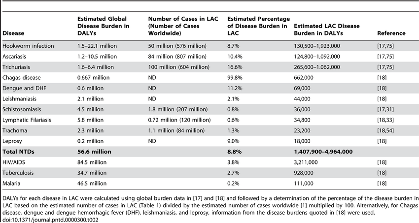
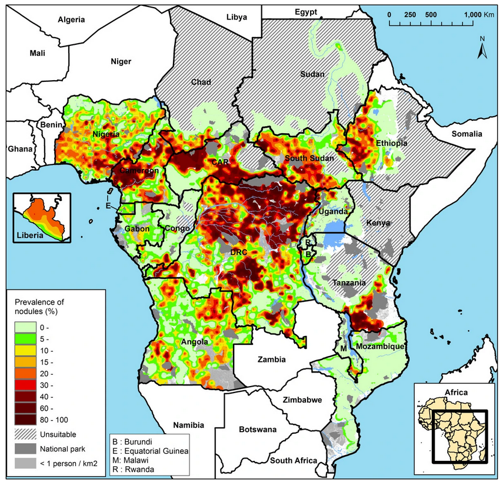
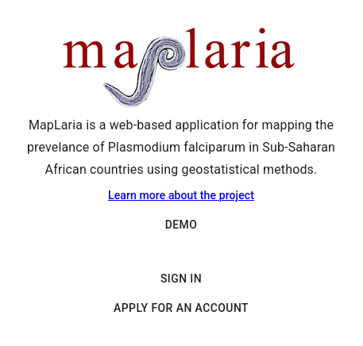

Model-based Geostatistics for Global Public Health
From Methodology Development to Policy Applications
My Background
- PhD in Statistics and Epidemiology (Sep 2015)
- MSc in Statistics (July 2012)
- BSc in Statistics (April 2012)
Presentation Overview
- Neglected Tropical Diseases: an overview
- Model-based Geostatistics: Current and Future Research
- Informing Policy Decisions
- Capacity Building
Neglected tropical diseases

NTD endemic areas

The impact of NTDs

NTDs Risk Factors


Common risk factors:
- Poor sanitation and lack of clean water
- Limited healthcare access
- Poverty and overcrowding
- Exposure to disease vectors (e.g., mosquitoes, flies)
- Lack of education and awareness
From the mining industry to public health


Riverblindness

Mapping river-blindness


The ingredients of a geostatistical model for prevalence mapping
- Outcome: \(Y_i\) number of cases out \(n_i\) sampled
. . .
- Locations: \(X = (x_1, \ldots, x_n)\)
. . .
- Covariates (optional): \(d(x)\) (e.g. elevation, distance from waterways)
. . .
- Spatial Gaussian process: \(S(x)\) (stationary and isotropic) \[ {\rm cov}\{S(x), S(x')\} = \sigma^2 \rho(||x - x'||; \phi) \] Example: \(\rho(u; \phi) = \exp\{-u/\phi\}\).
Putting all together
- Conditional independence: \(Y_{i}\) conditionally on \(S(x_i)\) are mutually independent \(Bin(n_i , p(x_i))\)
. . .
- The linear predictor \[ \log\left\{\frac{p(x_i)}{1-p(x_i)}\right\} = \beta_0 + d(x_i)^\top \beta + S(x_i) \]
. . .
- The joint distribution: \([S, Y] = [S] [Y | S]\)
where \(Y=(Y_1, \ldots, Y_n)\) and \(S = (S(x_1), \ldots, S(x_n))\)
. . .
- The likelihood function \[ L(\theta) = \int_{\mathbb{R}^n} [S] [Y | S] \: dS \] How do we approximate this intractable integral?
PrevMap and RiskMap
. . .
Giorgi, E. and Fronterre, C. (expected August 2025) Model-based geostatistics for global public health using R. Chapman and Hall/CRC. The R Series.
Identifying disease hotspots
- Hotspot: riverblindness prevalence above \(20\%\)
. . .
- Exceedance probability: \({\rm Prob}\{p(x) > 0.2 \: | \: Y \}\)
. . .
Extensions to spatio-temporal modelling
Question: Which spatio-temporal correlation structures are suitable for modelling disease prevalence data?

. . .
Giorgi, E., Diggle, P. J., Snow, R. W., Noor, A. M. (2018). Geostatistical methods for disease mapping and visualization using data from spatio-temporally referenced prevalence surveys. International Statistical Review. https://doi.org/10.1111/insr.12268
Combining data from multiple diagnostics
Questions: 1) How we predict a gold-standard diagnostic using cheap biased diagnostics? 2) How do we model the bivariate relationship between two complementary gold-standards?
. . .
Amoah, B., Diggle, P. J., Giorgi, E. (2019). A geostatistical framework for combining data from multiple diagnostic tests. Biometrics. doi:10.1111/biom.13142
Spatially structured zero-inflation
Question: How can we effectively model the bivariate relationship between disease suitability and disease prevalence?

. . .
Diggle, P. J., Giorgi, E. (2016). Model-based geostatistics for prevalence mapping in low-resource settings (with discussion). Journal of the American Statistical Association. 111:1096-1120
Future methodological directions
Using multivariate geostatistical models to analyse serological data from multiple diseases
Incorporating mathematical models for the impact of interventions into geostatistical models
Developing more robust methods for the validation of geostatistical models for counts data.
Dealing with spatial and temporal misalignment in repeated cross-sectional survey data
Translation into policy: the case of trachoma

Informing the elimination of trachoma

Sasanami, M., et al. (2023). Using model-based geostatistics for assessing the elimination of trachoma. PLoS Neglected Tropical Diseases, 17(7): e0011476. https://doi.org/10.1371/journal.pntd.0011476
Challenges in Translating Geostatistics for Policy
Complexity of methods – Advanced models are difficult to interpret for non-specialists.
Data uncertainty – Policymakers may struggle to incorporate probabilistic estimates into decision-making.
Lack of user-friendly tools – Limited access to tools that allow interactive exploration of spatial predictions.
Lack of local geostatistical expertise – Few or no local experts support to support control programmes.
Engagement with policy makers
Technical meeting on geostatistical methods for trachoma elimination
Lancaster University, 4-5 March 2024

Engagement with policy makers
Technical meeting on capacity building
Lancaster University, 3-4 March 2025

A user-friendly app for malaria mapping

THANK YOU!

Let’s Connect
🔗 giorgistat.github.io
📧 e.giorgi@lancaster.ac.uk
📍 CHICAS, Lancaster Medical School, Lancaster University, UK